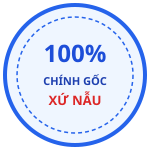

Đưa Ẩm Thực Phú Yên Vươn Xa Khắp Mọi Miền Đất Nước
Sinh ra và lớn lên trên mảnh đất nắng gió Phú Yên - nơi có vịnh Vũng Rô biển xanh ngăn ngắt, những ghềnh đá đĩa kỳ vĩ và cánh đồng lúa Tuy Hòa bạt ngàn, chúng tôi luôn ấp ủ ước mơ mang hương vị mộc mạc mà đậm đà của quê hương đến với bàn ăn của từng gia đình Việt.
Mỗi miếng Bò một nắng, từng thố Mắt cá ngừ hay từng giọt Nước mắm Gành Đỏ không đơn thuần chỉ là thực phẩm, mà là mồ hôi của ngư dân bám biển, là tâm huyết của những nghệ nhân làng nghề gìn giữ công thức truyền thống qua hàng trăm năm.
Chứng Nhận Chất Lượng & Vệ Sinh ATTP
Cam kết minh bạch nguồn gốc và chất lượng vệ sinh an toàn thực phẩm hàng đầu

Chứng Nhận VSATTP
Cấp bởi Chi cục Quản lý Chất lượng Nông Lâm sản và Thủy sản tỉnh Phú Yên. Đảm bảo 100% không phụ gia hóa học độc hại.

Chứng Nhận OCOP 4 Sao
Các sản phẩm Bò một nắng, Mắt cá ngừ và Nước mắm Gành Đỏ đạt chuẩn OCOP 4 sao tỉnh Phú Yên về chất lượng và bản sắc văn hóa.

100% Chính Gốc Xứ Nẫu
Hợp tác trực tiếp với Hợp tác xã ngư dân cảng cá Đông Tác Tuy Hòa, làng bánh Hòa Đa và các hộ nông dân chăn nuôi bò tơ Sơn Hòa.
Quy Trình Cấp Đông & Đóng Thùng Xốp 48 Tiếng
- Bước 1: Hải sản và thịt tươi sơ chế ngay sau đánh bắt, hút chân không 2 lớp chống nhiễm khuẩn.
- Bước 2: Cấp đông sâu tại nhiệt độ -18°C đến -22°C trong kho lạnh Tuy Hòa.
- Bước 3: Đóng vào thùng xốp chuyên dụng, chèn 4 mặt đá gel khô giữ lạnh liên tục 48 tiếng.
- Bước 4: Vận chuyển hỏa tốc bằng đường bay và xe lạnh chuyên dụng cùng Viettel Post.